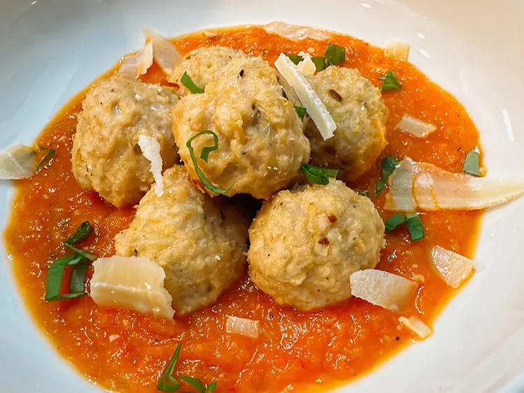

Chicken Ricotta

Description:
These ricotta chicken meatballs are both budget friendly and a lighter alternative to the traditional beef meatball, while still being flavorful and satisfying. The roasted tomato sauce is a delicious accompaniment.
Ingredients:
Meatballs
- 2 teaspoons oil
- 1/2 white onion, finely diced
- 6 cloves garlic, minced
1/2 teaspoon freshly ground black pepper, divided
- 3/4 teaspoon salt, divided
- 1/2 cup panko
- 1/4 cup ricotta cheese
- 1 large egg
- 1/2 teaspoon Italian seasoning
- 1 pound ground chicken
Sauce
- 15 Roma tomatoes, cut in half lengthwi
- 1 onion, quartered
- 2 tablespoons olive oil
- 8 cloves garlic, peeled
- 1/2 teaspoon salt, or to taste
- 1 teaspoon Italian seasoning, or to taste
- basil leaves, cut into thin strips, for garnish
- shaved Parmesan, for garnish
Steps:
- Preheat the oven to 350 degrees F (175 degrees C). Line a baking sheet with foil or parchment paper.
- Heat olive oil in a skillet. Add onion and garlic, season with 1/4 teaspoon salt and 1/4 teaspoon pepper, and cook until soft and translucent, 3 to 5 minutes. Let cool to room temperature.
- Combine panko and ricotta in a bowl and mix well. Add egg and season with remaining salt, pepper and Italian seasoning; mix to combine. Add ground chicken, and cooked onion and garlic mixture; mix gently to combine.
- Shape into about 24 meatballs and place on the prepared baking sheet.
- Bake meatballs in the preheated oven until no longer pink in the center and the juices run clear. An instant-read thermometer inserted into the center should read at least 165 degrees F (74 degrees C), about 20 minutes; remove to cool.
- To make the sauce, preheat the oven to 425 degrees F (220 degrees C).
- Coat the tomatoes with olive oil, then place cut side down in a single layer on a rimmed baking sheet. Add onion and garlic cloves to the baking sheet and sprinkle everything with salt.
- Roast in the preheated oven until tomato skins begin to shrivel and tomatoes begin to release their juice, about 25 minutes.
- Remove and let cool slightly. Carefully discard the skins.
- Place tomatoes, onion, and garlic in a blender and blend to your preferred consistency. Stir in Italian seasoning and serve with chicken meatballs. Garnish with basil and shaved Parmesan.
Cook's Note:
If you want a thicker sauce, cook the processed sauce down in a saucepan to the desired thickness. This sauce will keep in the refrigerator for up to 3 days or in the freezer for up to a year. Makes about 6 cups.
Congrats! You've made your own Chicken Ricotta!